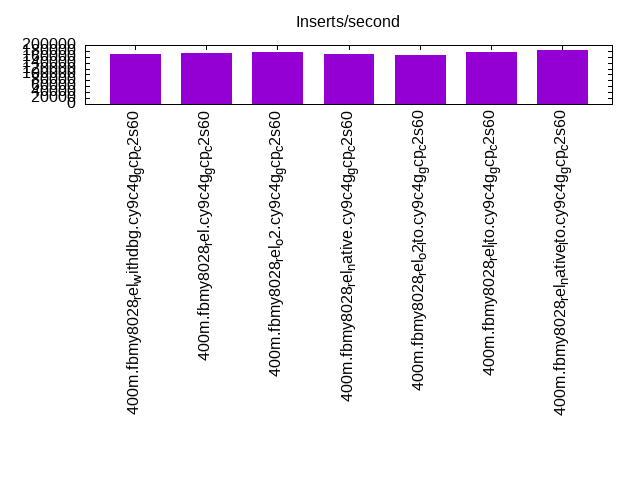

Introduction
This is a report for the insert benchmark with 400M docs and 20 client(s). It is generated by scripts (bash, awk, sed) and Tufte might not be impressed. An overview of the insert benchmark is here and a short update is here. Below, by DBMS, I mean DBMS+version.config. An example is my8020.c10b40 where my means MySQL, 8020 is version 8.0.20 and c10b40 is the name for the configuration file.
The test server is c2-standard-60 from GCP with 30 cores, hyperthreading disabled, 240G RAM and 3T of NVMe storage. The benchmark was run with 20 clients and there were 1 or 2 connections per client (1 for queries, 1 for inserts). The benchmark loads 400M rows without secondary indexes, creates secondary indexes, loads another 400M rows then does 3 read+write tests for 1800 seconds each that do queries as fast as possible with 100, 500 and then 1000 writes/second/client concurrent with the queries. There was one table per client. The database is cached by the OS page cache but not the storage engine. Clients and the DBMS share one server. The per-database configs are in the per-database subdirectories here.
The tested DBMS are:
- fbmy8028_rel_withdbg.cy9c4g_gcp_c2s60 - MyRocks 8.0.28, the cy9c4g_gcp_c2s60 config and compiled with CMAKE_BUILD_TYPE=RelWithDebInfo and -O2
- fbmy8028_rel.cy9c4g_gcp_c2s60 - MyRocks 8.0.28, the cy9c4g_gcp_c2s60 config and compiled with CMAKE_BUILD_TYPE=Release and -O3
- fbmy8028_rel_o2.cy9c4g_gcp_c2s60 - MyRocks 8.0.28, the cy9c4g_gcp_c2s60 config and compiled with CMAKE_BUILD_TYPE=Release and -O2
- fbmy8028_rel_native.cy9c4g_gcp_c2s60 - MyRocks 8.0.28, the cy9c4g_gcp_c2s60 config and compiled with CMAKE_BUILD_TYPE=Release and -O3 -march=native -mtune=native
- fbmy8028_rel_o2_lto.cy9c4g_gcp_c2s60 - MyRocks 8.0.28, the cy9c4g_gcp_c2s60 config and compiled with CMAKE_BUILD_TYPE=Release and -O2 -flto
- fbmy8028_rel_lto.cy9c4g_gcp_c2s60 - MyRocks 8.0.28, the cy9c4g_gcp_c2s60 config and compiled with CMAKE_BUILD_TYPE=Release and -O3 -flto
- fbmy8028_rel_native_lto.cy9c4g_gcp_c2s60 - MyRocks 8.0.28, the cy9c4g_gcp_c2s60 config and compiled with CMAKE_BUILD_TYPE=Release and -O3 -flto -march=native -mtune=native
Contents
- Summary
- l.i0: load without secondary indexes
- l.x: create secondary indexes
- l.i1: continue load after secondary indexes created
- q100.1: range queries with 100 insert/s per client
- q500.1: range queries with 500 insert/s per client
- q1000.1: range queries with 1000 insert/s per client
Summary
The numbers are inserts/s for l.i0 and l.i1, indexed docs (or rows) /s for l.x and queries/s for q*.2. The values are the average rate over the entire test for inserts (IPS) and queries (QPS). The range of values for IPS and QPS is split into 3 parts: bottom 25%, middle 50%, top 25%. Values in the bottom 25% have a red background, values in the top 25% have a green background and values in the middle have no color. A gray background is used for values that can be ignored because the DBMS did not sustain the target insert rate. Red backgrounds are not used when the minimum value is within 80% of the max value.
| dbms | l.i0 | l.x | l.i1 | q100.1 | q500.1 | q1000.1 |
|---|---|---|---|---|---|---|
| 400m.fbmy8028_rel_withdbg.cy9c4g_gcp_c2s60 | 605144 | 1498502 | 170430 | 73471 | 72455 | 70323 |
| 400m.fbmy8028_rel.cy9c4g_gcp_c2s60 | 614439 | 1653306 | 172191 | 73007 | 71920 | 70098 |
| 400m.fbmy8028_rel_o2.cy9c4g_gcp_c2s60 | 606061 | 1403860 | 174749 | 73327 | 71957 | 69906 |
| 400m.fbmy8028_rel_native.cy9c4g_gcp_c2s60 | 591716 | 1504135 | 169205 | 72318 | 71945 | 69815 |
| 400m.fbmy8028_rel_o2_lto.cy9c4g_gcp_c2s60 | 605144 | 1465568 | 167574 | 73348 | 72096 | 70214 |
| 400m.fbmy8028_rel_lto.cy9c4g_gcp_c2s60 | 619195 | 1709829 | 177778 | 74026 | 72728 | 70634 |
| 400m.fbmy8028_rel_native_lto.cy9c4g_gcp_c2s60 | 616333 | 1667083 | 182149 | 73841 | 72039 | 70001 |
This table has relative throughput, throughput for the DBMS relative to the DBMS in the first line, using the absolute throughput from the previous table.
| dbms | l.i0 | l.x | l.i1 | q100.1 | q500.1 | q1000.1 |
|---|---|---|---|---|---|---|
| 400m.fbmy8028_rel_withdbg.cy9c4g_gcp_c2s60 | 1.00 | 1.00 | 1.00 | 1.00 | 1.00 | 1.00 |
| 400m.fbmy8028_rel.cy9c4g_gcp_c2s60 | 1.02 | 1.10 | 1.01 | 0.99 | 0.99 | 1.00 |
| 400m.fbmy8028_rel_o2.cy9c4g_gcp_c2s60 | 1.00 | 0.94 | 1.03 | 1.00 | 0.99 | 0.99 |
| 400m.fbmy8028_rel_native.cy9c4g_gcp_c2s60 | 0.98 | 1.00 | 0.99 | 0.98 | 0.99 | 0.99 |
| 400m.fbmy8028_rel_o2_lto.cy9c4g_gcp_c2s60 | 1.00 | 0.98 | 0.98 | 1.00 | 1.00 | 1.00 |
| 400m.fbmy8028_rel_lto.cy9c4g_gcp_c2s60 | 1.02 | 1.14 | 1.04 | 1.01 | 1.00 | 1.00 |
| 400m.fbmy8028_rel_native_lto.cy9c4g_gcp_c2s60 | 1.02 | 1.11 | 1.07 | 1.01 | 0.99 | 1.00 |
This lists the average rate of inserts/s for the tests that do inserts concurrent with queries. For such tests the query rate is listed in the table above. The read+write tests are setup so that the insert rate should match the target rate every second. Cells that are not at least 95% of the target have a red background to indicate a failure to satisfy the target.
| dbms | q100.1 | q500.1 | q1000.1 |
|---|---|---|---|
| fbmy8028_rel_withdbg.cy9c4g_gcp_c2s60 | 1976 | 9879 | 19769 |
| fbmy8028_rel.cy9c4g_gcp_c2s60 | 1977 | 9885 | 19769 |
| fbmy8028_rel_o2.cy9c4g_gcp_c2s60 | 1976 | 9879 | 19769 |
| fbmy8028_rel_native.cy9c4g_gcp_c2s60 | 1976 | 9885 | 19769 |
| fbmy8028_rel_o2_lto.cy9c4g_gcp_c2s60 | 1977 | 9879 | 19769 |
| fbmy8028_rel_lto.cy9c4g_gcp_c2s60 | 1977 | 9885 | 19769 |
| fbmy8028_rel_native_lto.cy9c4g_gcp_c2s60 | 1977 | 9879 | 19769 |
| target | 2000 | 10000 | 20000 |
l.i0
l.i0: load without secondary indexes. Graphs for performance per 1-second interval are here.
Average throughput:
Insert response time histogram: each cell has the percentage of responses that take <= the time in the header and max is the max response time in seconds. For the max column values in the top 25% of the range have a red background and in the bottom 25% of the range have a green background. The red background is not used when the min value is within 80% of the max value.
| dbms | 256us | 1ms | 4ms | 16ms | 64ms | 256ms | 1s | 4s | 16s | gt | max |
|---|---|---|---|---|---|---|---|---|---|---|---|
| fbmy8028_rel_withdbg.cy9c4g_gcp_c2s60 | 0.308 | 91.389 | 8.227 | 0.035 | 0.039 | 0.002 | 0.310 | ||||
| fbmy8028_rel.cy9c4g_gcp_c2s60 | 0.367 | 92.750 | 6.807 | 0.032 | 0.042 | 0.002 | 0.276 | ||||
| fbmy8028_rel_o2.cy9c4g_gcp_c2s60 | 0.291 | 92.084 | 7.555 | 0.028 | 0.040 | 0.002 | 0.285 | ||||
| fbmy8028_rel_native.cy9c4g_gcp_c2s60 | 0.703 | 90.071 | 9.137 | 0.041 | 0.043 | 0.004 | 0.481 | ||||
| fbmy8028_rel_o2_lto.cy9c4g_gcp_c2s60 | 0.421 | 91.823 | 7.678 | 0.032 | 0.044 | 0.001 | 0.367 | ||||
| fbmy8028_rel_lto.cy9c4g_gcp_c2s60 | 1.024 | 91.114 | 7.785 | 0.031 | 0.045 | 0.002 | 0.370 | ||||
| fbmy8028_rel_native_lto.cy9c4g_gcp_c2s60 | 0.458 | 92.149 | 7.324 | 0.027 | 0.039 | 0.003 | 0.330 |
Performance metrics for the DBMS listed above. Some are normalized by throughput, others are not. Legend for results is here.
ips qps rps rmbps wps wmbps rpq rkbpq wpi wkbpi csps cpups cspq cpupq dbgb1 dbgb2 rss maxop p50 p99 tag 605144 0 0 0.0 608.9 144.3 0.000 0.000 0.001 0.244 485286 64.3 0.802 32 12.7 13.2 3.8 0.310 31466 18080 400m.fbmy8028_rel_withdbg.cy9c4g_gcp_c2s60 614439 0 0 0.0 618.4 145.5 0.000 0.000 0.001 0.242 470038 63.5 0.765 31 12.6 13.1 3.9 0.276 32465 20378 400m.fbmy8028_rel.cy9c4g_gcp_c2s60 606061 0 0 0.0 595.6 139.3 0.000 0.000 0.001 0.235 487288 63.8 0.804 32 12.8 13.4 3.8 0.285 30980 14384 400m.fbmy8028_rel_o2.cy9c4g_gcp_c2s60 591716 0 0 0.0 634.7 147.3 0.000 0.000 0.001 0.255 525761 64.2 0.889 33 12.6 13.2 3.9 0.481 29368 18686 400m.fbmy8028_rel_native.cy9c4g_gcp_c2s60 605144 0 0 0.0 608.9 143.7 0.000 0.000 0.001 0.243 519226 63.7 0.858 32 12.8 13.3 3.9 0.367 31466 18679 400m.fbmy8028_rel_o2_lto.cy9c4g_gcp_c2s60 619195 0 0 0.0 635.8 148.6 0.000 0.000 0.001 0.246 485316 63.3 0.784 31 12.7 13.3 3.9 0.370 31565 18081 400m.fbmy8028_rel_lto.cy9c4g_gcp_c2s60 616333 0 0 0.0 618.8 145.2 0.000 0.000 0.001 0.241 494471 63.5 0.802 31 12.7 13.3 3.8 0.330 32680 18967 400m.fbmy8028_rel_native_lto.cy9c4g_gcp_c2s60
l.x
l.x: create secondary indexes.
Average throughput:

Performance metrics for the DBMS listed above. Some are normalized by throughput, others are not. Legend for results is here.
ips qps rps rmbps wps wmbps rpq rkbpq wpi wkbpi csps cpups cspq cpupq dbgb1 dbgb2 rss maxop p50 p99 tag 1498502 0 3 0.2 568.1 164.4 0.000 0.000 0.000 0.112 5848 59.3 0.004 12 27.0 27.6 6.5 0.004 NA NA 400m.fbmy8028_rel_withdbg.cy9c4g_gcp_c2s60 1653306 0 3 0.2 615.4 184.5 0.000 0.000 0.000 0.114 6108 59.1 0.004 11 27.0 27.6 6.6 0.003 NA NA 400m.fbmy8028_rel.cy9c4g_gcp_c2s60 1403860 0 2 0.2 521.3 157.7 0.000 0.000 0.000 0.115 5556 56.4 0.004 12 26.9 27.5 6.5 0.004 NA NA 400m.fbmy8028_rel_o2.cy9c4g_gcp_c2s60 1504135 0 3 0.2 573.3 161.4 0.000 0.000 0.000 0.110 5946 53.4 0.004 11 27.0 27.6 6.5 0.005 NA NA 400m.fbmy8028_rel_native.cy9c4g_gcp_c2s60 1465568 0 3 0.2 562.8 160.2 0.000 0.000 0.000 0.112 5911 58.9 0.004 12 27.0 27.6 6.5 0.004 NA NA 400m.fbmy8028_rel_o2_lto.cy9c4g_gcp_c2s60 1709829 0 3 0.2 633.8 188.9 0.000 0.000 0.000 0.113 6301 57.6 0.004 10 27.0 27.6 6.6 0.004 NA NA 400m.fbmy8028_rel_lto.cy9c4g_gcp_c2s60 1667083 0 3 0.2 631.0 182.2 0.000 0.000 0.000 0.112 6288 56.6 0.004 10 27.0 27.5 6.5 0.019 NA NA 400m.fbmy8028_rel_native_lto.cy9c4g_gcp_c2s60
l.i1
l.i1: continue load after secondary indexes created. Graphs for performance per 1-second interval are here.
Average throughput:
Insert response time histogram: each cell has the percentage of responses that take <= the time in the header and max is the max response time in seconds. For the max column values in the top 25% of the range have a red background and in the bottom 25% of the range have a green background. The red background is not used when the min value is within 80% of the max value.
| dbms | 256us | 1ms | 4ms | 16ms | 64ms | 256ms | 1s | 4s | 16s | gt | max |
|---|---|---|---|---|---|---|---|---|---|---|---|
| fbmy8028_rel_withdbg.cy9c4g_gcp_c2s60 | 0.006 | 10.228 | 89.589 | 0.133 | 0.035 | 0.008 | 0.001 | 3.738 | |||
| fbmy8028_rel.cy9c4g_gcp_c2s60 | 0.017 | 10.774 | 88.758 | 0.420 | 0.024 | 0.003 | 0.001 | 0.002 | 4.429 | ||
| fbmy8028_rel_o2.cy9c4g_gcp_c2s60 | 0.006 | 10.743 | 89.152 | 0.043 | 0.042 | 0.013 | 0.002 | 3.697 | |||
| fbmy8028_rel_native.cy9c4g_gcp_c2s60 | 0.011 | 10.337 | 88.933 | 0.681 | 0.035 | 0.003 | 0.673 | ||||
| fbmy8028_rel_o2_lto.cy9c4g_gcp_c2s60 | 0.028 | 11.622 | 87.544 | 0.632 | 0.145 | 0.030 | nonzero | 2.192 | |||
| fbmy8028_rel_lto.cy9c4g_gcp_c2s60 | 0.027 | 13.374 | 86.430 | 0.137 | 0.023 | 0.003 | 0.002 | 0.003 | 4.428 | ||
| fbmy8028_rel_native_lto.cy9c4g_gcp_c2s60 | 0.029 | 12.148 | 87.759 | 0.040 | 0.021 | 0.003 | 0.372 |
Performance metrics for the DBMS listed above. Some are normalized by throughput, others are not. Legend for results is here.
ips qps rps rmbps wps wmbps rpq rkbpq wpi wkbpi csps cpups cspq cpupq dbgb1 dbgb2 rss maxop p50 p99 tag 170430 0 14 3.8 560.9 128.7 0.000 0.023 0.003 0.773 183159 38.1 1.075 67 62.0 63.7 5.1 3.738 8694 2197 400m.fbmy8028_rel_withdbg.cy9c4g_gcp_c2s60 172191 0 14 3.9 584.0 135.8 0.000 0.023 0.003 0.808 170334 38.2 0.989 67 61.1 62.9 4.9 4.429 8946 0 400m.fbmy8028_rel.cy9c4g_gcp_c2s60 174749 0 15 4.0 592.7 136.3 0.000 0.023 0.003 0.799 177641 39.0 1.017 67 57.3 59.0 5.0 3.697 8941 1250 400m.fbmy8028_rel_o2.cy9c4g_gcp_c2s60 169205 0 14 3.8 523.0 122.1 0.000 0.023 0.003 0.739 205263 37.2 1.213 66 67.4 69.2 5.1 0.673 8791 1648 400m.fbmy8028_rel_native.cy9c4g_gcp_c2s60 167574 0 14 3.7 528.0 125.8 0.000 0.023 0.003 0.769 198738 37.0 1.186 66 65.3 67.0 4.9 2.192 9190 100 400m.fbmy8028_rel_o2_lto.cy9c4g_gcp_c2s60 177778 0 15 4.0 582.9 137.8 0.000 0.023 0.003 0.794 182733 39.5 1.028 67 57.9 59.6 5.1 4.428 9340 0 400m.fbmy8028_rel_lto.cy9c4g_gcp_c2s60 182149 0 15 4.1 664.8 148.6 0.000 0.023 0.004 0.836 147577 37.1 0.810 61 59.7 61.5 5.1 0.372 9149 7045 400m.fbmy8028_rel_native_lto.cy9c4g_gcp_c2s60
q100.1
q100.1: range queries with 100 insert/s per client. Graphs for performance per 1-second interval are here.
Average throughput:
Query response time histogram: each cell has the percentage of responses that take <= the time in the header and max is the max response time in seconds. For max values in the top 25% of the range have a red background and in the bottom 25% of the range have a green background. The red background is not used when the min value is within 80% of the max value.
| dbms | 256us | 1ms | 4ms | 16ms | 64ms | 256ms | 1s | 4s | 16s | gt | max |
|---|---|---|---|---|---|---|---|---|---|---|---|
| fbmy8028_rel_withdbg.cy9c4g_gcp_c2s60 | 53.792 | 46.201 | 0.007 | nonzero | nonzero | 0.032 | |||||
| fbmy8028_rel.cy9c4g_gcp_c2s60 | 49.902 | 50.093 | 0.005 | nonzero | nonzero | 0.037 | |||||
| fbmy8028_rel_o2.cy9c4g_gcp_c2s60 | 51.885 | 48.109 | 0.005 | nonzero | nonzero | 0.024 | |||||
| fbmy8028_rel_native.cy9c4g_gcp_c2s60 | 49.587 | 50.401 | 0.010 | 0.001 | nonzero | 0.041 | |||||
| fbmy8028_rel_o2_lto.cy9c4g_gcp_c2s60 | 51.860 | 48.131 | 0.008 | 0.001 | nonzero | nonzero | 0.113 | ||||
| fbmy8028_rel_lto.cy9c4g_gcp_c2s60 | 54.203 | 45.792 | 0.005 | nonzero | nonzero | 0.028 | |||||
| fbmy8028_rel_native_lto.cy9c4g_gcp_c2s60 | 53.105 | 46.890 | 0.005 | nonzero | nonzero | 0.031 |
Insert response time histogram: each cell has the percentage of responses that take <= the time in the header and max is the max response time in seconds. For max values in the top 25% of the range have a red background and in the bottom 25% of the range have a green background. The red background is not used when the min value is within 80% of the max value.
| dbms | 256us | 1ms | 4ms | 16ms | 64ms | 256ms | 1s | 4s | 16s | gt | max |
|---|---|---|---|---|---|---|---|---|---|---|---|
| fbmy8028_rel_withdbg.cy9c4g_gcp_c2s60 | 0.053 | 98.960 | 0.942 | 0.046 | 0.033 | ||||||
| fbmy8028_rel.cy9c4g_gcp_c2s60 | 0.078 | 99.790 | 0.132 | 0.011 | |||||||
| fbmy8028_rel_o2.cy9c4g_gcp_c2s60 | 0.088 | 99.787 | 0.125 | 0.011 | |||||||
| fbmy8028_rel_native.cy9c4g_gcp_c2s60 | 0.068 | 98.531 | 0.483 | 0.332 | 0.536 | 0.050 | 0.518 | ||||
| fbmy8028_rel_o2_lto.cy9c4g_gcp_c2s60 | 0.115 | 98.978 | 0.140 | 0.144 | 0.535 | 0.088 | 0.568 | ||||
| fbmy8028_rel_lto.cy9c4g_gcp_c2s60 | 0.204 | 99.218 | 0.574 | 0.004 | 0.022 | ||||||
| fbmy8028_rel_native_lto.cy9c4g_gcp_c2s60 | 0.117 | 99.219 | 0.662 | 0.001 | 0.017 |
Performance metrics for the DBMS listed above. Some are normalized by throughput, others are not. Legend for results is here.
ips qps rps rmbps wps wmbps rpq rkbpq wpi wkbpi csps cpups cspq cpupq dbgb1 dbgb2 rss maxop p50 p99 tag 1976 73471 0 0.0 48.7 8.4 0.000 0.000 0.025 4.372 279160 67.0 3.800 274 56.1 56.3 5.1 0.032 3724 2925 400m.fbmy8028_rel_withdbg.cy9c4g_gcp_c2s60 1977 73007 0 0.0 27.7 4.6 0.000 0.000 0.014 2.383 284227 66.1 3.893 272 56.7 58.9 5.3 0.037 3756 3388 400m.fbmy8028_rel.cy9c4g_gcp_c2s60 1976 73327 0 0.0 26.2 3.8 0.000 0.000 0.013 1.990 281774 66.4 3.843 272 56.2 58.3 5.1 0.024 3662 3404 400m.fbmy8028_rel_o2.cy9c4g_gcp_c2s60 1976 72318 0 0.0 58.5 10.5 0.000 0.000 0.030 5.453 278898 67.1 3.857 278 56.1 56.3 5.2 0.041 3692 2605 400m.fbmy8028_rel_native.cy9c4g_gcp_c2s60 1977 73348 16 0.1 38.1 6.3 0.000 0.002 0.019 3.254 282940 66.4 3.857 272 56.1 58.3 5.1 0.113 3727 3022 400m.fbmy8028_rel_o2_lto.cy9c4g_gcp_c2s60 1977 74026 0 0.0 35.8 5.9 0.000 0.000 0.018 3.064 284845 66.3 3.848 269 56.1 58.3 5.1 0.028 3756 3085 400m.fbmy8028_rel_lto.cy9c4g_gcp_c2s60 1977 73841 0 0.0 26.3 4.1 0.000 0.000 0.013 2.123 285700 65.9 3.869 268 56.1 58.3 5.1 0.031 3708 3469 400m.fbmy8028_rel_native_lto.cy9c4g_gcp_c2s60
q500.1
q500.1: range queries with 500 insert/s per client. Graphs for performance per 1-second interval are here.
Average throughput:
Query response time histogram: each cell has the percentage of responses that take <= the time in the header and max is the max response time in seconds. For max values in the top 25% of the range have a red background and in the bottom 25% of the range have a green background. The red background is not used when the min value is within 80% of the max value.
| dbms | 256us | 1ms | 4ms | 16ms | 64ms | 256ms | 1s | 4s | 16s | gt | max |
|---|---|---|---|---|---|---|---|---|---|---|---|
| fbmy8028_rel_withdbg.cy9c4g_gcp_c2s60 | 48.936 | 51.035 | 0.029 | 0.001 | nonzero | 0.022 | |||||
| fbmy8028_rel.cy9c4g_gcp_c2s60 | 46.106 | 53.866 | 0.027 | 0.001 | nonzero | 0.029 | |||||
| fbmy8028_rel_o2.cy9c4g_gcp_c2s60 | 46.741 | 53.229 | 0.029 | 0.001 | nonzero | 0.033 | |||||
| fbmy8028_rel_native.cy9c4g_gcp_c2s60 | 46.139 | 53.833 | 0.028 | 0.001 | nonzero | nonzero | 0.143 | ||||
| fbmy8028_rel_o2_lto.cy9c4g_gcp_c2s60 | 47.098 | 52.873 | 0.029 | 0.001 | nonzero | 0.027 | |||||
| fbmy8028_rel_lto.cy9c4g_gcp_c2s60 | 49.485 | 50.488 | 0.026 | nonzero | nonzero | 0.028 | |||||
| fbmy8028_rel_native_lto.cy9c4g_gcp_c2s60 | 46.787 | 53.185 | 0.028 | 0.001 | nonzero | 0.030 |
Insert response time histogram: each cell has the percentage of responses that take <= the time in the header and max is the max response time in seconds. For max values in the top 25% of the range have a red background and in the bottom 25% of the range have a green background. The red background is not used when the min value is within 80% of the max value.
| dbms | 256us | 1ms | 4ms | 16ms | 64ms | 256ms | 1s | 4s | 16s | gt | max |
|---|---|---|---|---|---|---|---|---|---|---|---|
| fbmy8028_rel_withdbg.cy9c4g_gcp_c2s60 | 0.057 | 40.144 | 59.669 | 0.131 | 0.027 | ||||||
| fbmy8028_rel.cy9c4g_gcp_c2s60 | 0.027 | 50.091 | 49.805 | 0.071 | 0.006 | 0.139 | |||||
| fbmy8028_rel_o2.cy9c4g_gcp_c2s60 | 0.036 | 43.041 | 56.800 | 0.124 | 0.027 | ||||||
| fbmy8028_rel_native.cy9c4g_gcp_c2s60 | 0.102 | 49.122 | 50.686 | 0.084 | 0.006 | 0.145 | |||||
| fbmy8028_rel_o2_lto.cy9c4g_gcp_c2s60 | 0.021 | 41.646 | 58.210 | 0.118 | 0.006 | 0.092 | |||||
| fbmy8028_rel_lto.cy9c4g_gcp_c2s60 | 0.347 | 56.657 | 42.917 | 0.079 | 0.025 | ||||||
| fbmy8028_rel_native_lto.cy9c4g_gcp_c2s60 | 0.254 | 51.155 | 48.517 | 0.074 | 0.025 |
Performance metrics for the DBMS listed above. Some are normalized by throughput, others are not. Legend for results is here.
ips qps rps rmbps wps wmbps rpq rkbpq wpi wkbpi csps cpups cspq cpupq dbgb1 dbgb2 rss maxop p50 p99 tag 9879 72455 0 0.0 51.2 9.4 0.000 0.000 0.005 0.971 274393 67.5 3.787 279 57.4 57.9 5.2 0.022 3676 3388 400m.fbmy8028_rel_withdbg.cy9c4g_gcp_c2s60 9885 71920 0 0.0 53.0 9.2 0.000 0.000 0.005 0.948 276458 67.2 3.844 280 57.4 57.9 5.2 0.029 3644 3372 400m.fbmy8028_rel.cy9c4g_gcp_c2s60 9879 71957 0 0.0 54.1 8.9 0.000 0.000 0.005 0.926 273695 67.6 3.804 282 57.4 57.9 5.2 0.033 3582 3324 400m.fbmy8028_rel_o2.cy9c4g_gcp_c2s60 9885 71945 0 0.0 51.7 8.5 0.000 0.000 0.005 0.884 276087 67.2 3.837 280 57.8 58.3 5.3 0.143 3612 3326 400m.fbmy8028_rel_native.cy9c4g_gcp_c2s60 9879 72096 0 0.0 52.1 9.6 0.000 0.000 0.005 0.993 276514 67.1 3.835 279 57.5 57.9 5.2 0.027 3628 3356 400m.fbmy8028_rel_o2_lto.cy9c4g_gcp_c2s60 9885 72728 0 0.0 53.9 9.1 0.000 0.000 0.005 0.945 278570 67.1 3.830 277 57.4 57.9 5.2 0.028 3692 3420 400m.fbmy8028_rel_lto.cy9c4g_gcp_c2s60 9879 72039 0 0.0 54.8 8.8 0.000 0.000 0.006 0.910 276629 67.0 3.840 279 57.5 58.0 5.3 0.030 3644 3373 400m.fbmy8028_rel_native_lto.cy9c4g_gcp_c2s60
q1000.1
q1000.1: range queries with 1000 insert/s per client. Graphs for performance per 1-second interval are here.
Average throughput:
Query response time histogram: each cell has the percentage of responses that take <= the time in the header and max is the max response time in seconds. For max values in the top 25% of the range have a red background and in the bottom 25% of the range have a green background. The red background is not used when the min value is within 80% of the max value.
| dbms | 256us | 1ms | 4ms | 16ms | 64ms | 256ms | 1s | 4s | 16s | gt | max |
|---|---|---|---|---|---|---|---|---|---|---|---|
| fbmy8028_rel_withdbg.cy9c4g_gcp_c2s60 | 40.373 | 59.576 | 0.049 | 0.001 | nonzero | 0.056 | |||||
| fbmy8028_rel.cy9c4g_gcp_c2s60 | 39.742 | 60.208 | 0.049 | 0.001 | nonzero | 0.032 | |||||
| fbmy8028_rel_o2.cy9c4g_gcp_c2s60 | 38.709 | 61.241 | 0.049 | 0.001 | nonzero | nonzero | 0.067 | ||||
| fbmy8028_rel_native.cy9c4g_gcp_c2s60 | 38.226 | 61.725 | 0.048 | 0.001 | nonzero | 0.032 | |||||
| fbmy8028_rel_o2_lto.cy9c4g_gcp_c2s60 | 39.933 | 60.019 | 0.047 | 0.001 | nonzero | 0.038 | |||||
| fbmy8028_rel_lto.cy9c4g_gcp_c2s60 | 41.711 | 58.241 | 0.047 | 0.001 | nonzero | 0.046 | |||||
| fbmy8028_rel_native_lto.cy9c4g_gcp_c2s60 | 39.104 | 60.847 | 0.048 | 0.001 | nonzero | 0.031 |
Insert response time histogram: each cell has the percentage of responses that take <= the time in the header and max is the max response time in seconds. For max values in the top 25% of the range have a red background and in the bottom 25% of the range have a green background. The red background is not used when the min value is within 80% of the max value.
| dbms | 256us | 1ms | 4ms | 16ms | 64ms | 256ms | 1s | 4s | 16s | gt | max |
|---|---|---|---|---|---|---|---|---|---|---|---|
| fbmy8028_rel_withdbg.cy9c4g_gcp_c2s60 | 0.009 | 33.897 | 65.807 | 0.287 | 0.048 | ||||||
| fbmy8028_rel.cy9c4g_gcp_c2s60 | 0.019 | 31.633 | 68.044 | 0.304 | 0.038 | ||||||
| fbmy8028_rel_o2.cy9c4g_gcp_c2s60 | 0.007 | 33.819 | 65.911 | 0.262 | 0.046 | ||||||
| fbmy8028_rel_native.cy9c4g_gcp_c2s60 | 0.030 | 30.855 | 68.826 | 0.289 | 0.032 | ||||||
| fbmy8028_rel_o2_lto.cy9c4g_gcp_c2s60 | 0.015 | 34.187 | 65.536 | 0.263 | 0.036 | ||||||
| fbmy8028_rel_lto.cy9c4g_gcp_c2s60 | 0.133 | 34.399 | 65.243 | 0.225 | 0.045 | ||||||
| fbmy8028_rel_native_lto.cy9c4g_gcp_c2s60 | 0.058 | 32.869 | 66.808 | 0.265 | 0.051 |
Performance metrics for the DBMS listed above. Some are normalized by throughput, others are not. Legend for results is here.
ips qps rps rmbps wps wmbps rpq rkbpq wpi wkbpi csps cpups cspq cpupq dbgb1 dbgb2 rss maxop p50 p99 tag 19769 70323 0 0.0 100.4 20.9 0.000 0.000 0.005 1.083 259900 69.4 3.696 296 60.0 61.1 5.4 0.056 3561 3292 400m.fbmy8028_rel_withdbg.cy9c4g_gcp_c2s60 19769 70098 0 0.0 99.3 19.3 0.000 0.000 0.005 0.998 263368 69.0 3.757 295 60.0 61.1 5.3 0.032 3548 3278 400m.fbmy8028_rel.cy9c4g_gcp_c2s60 19769 69906 0 0.0 101.2 19.7 0.000 0.000 0.005 1.022 259033 69.4 3.705 298 60.0 61.0 5.4 0.067 3502 3227 400m.fbmy8028_rel_o2.cy9c4g_gcp_c2s60 19769 69815 0 0.0 95.1 19.2 0.000 0.000 0.005 0.993 261522 69.2 3.746 297 59.9 61.0 5.3 0.032 3534 3246 400m.fbmy8028_rel_native.cy9c4g_gcp_c2s60 19769 70214 0 0.0 97.1 20.2 0.000 0.000 0.005 1.047 263935 69.0 3.759 295 60.0 61.1 5.3 0.038 3564 3277 400m.fbmy8028_rel_o2_lto.cy9c4g_gcp_c2s60 19769 70634 0 0.0 94.5 20.0 0.000 0.000 0.005 1.036 265012 68.8 3.752 292 60.0 61.1 5.3 0.046 3612 3324 400m.fbmy8028_rel_lto.cy9c4g_gcp_c2s60 19769 70001 0 0.0 101.2 20.3 0.000 0.000 0.005 1.052 262886 68.9 3.755 295 60.0 61.1 5.2 0.031 3532 3244 400m.fbmy8028_rel_native_lto.cy9c4g_gcp_c2s60
l.i0
l.i0: load without secondary indexes
Performance metrics for all DBMS, not just the ones listed above. Some are normalized by throughput, others are not. Legend for results is here.
ips qps rps rmbps wps wmbps rpq rkbpq wpi wkbpi csps cpups cspq cpupq dbgb1 dbgb2 rss maxop p50 p99 tag 605144 0 0 0.0 608.9 144.3 0.000 0.000 0.001 0.244 485286 64.3 0.802 32 12.7 13.2 3.8 0.310 31466 18080 400m.fbmy8028_rel_withdbg.cy9c4g_gcp_c2s60 614439 0 0 0.0 618.4 145.5 0.000 0.000 0.001 0.242 470038 63.5 0.765 31 12.6 13.1 3.9 0.276 32465 20378 400m.fbmy8028_rel.cy9c4g_gcp_c2s60 606061 0 0 0.0 595.6 139.3 0.000 0.000 0.001 0.235 487288 63.8 0.804 32 12.8 13.4 3.8 0.285 30980 14384 400m.fbmy8028_rel_o2.cy9c4g_gcp_c2s60 591716 0 0 0.0 634.7 147.3 0.000 0.000 0.001 0.255 525761 64.2 0.889 33 12.6 13.2 3.9 0.481 29368 18686 400m.fbmy8028_rel_native.cy9c4g_gcp_c2s60 605144 0 0 0.0 608.9 143.7 0.000 0.000 0.001 0.243 519226 63.7 0.858 32 12.8 13.3 3.9 0.367 31466 18679 400m.fbmy8028_rel_o2_lto.cy9c4g_gcp_c2s60 619195 0 0 0.0 635.8 148.6 0.000 0.000 0.001 0.246 485316 63.3 0.784 31 12.7 13.3 3.9 0.370 31565 18081 400m.fbmy8028_rel_lto.cy9c4g_gcp_c2s60 616333 0 0 0.0 618.8 145.2 0.000 0.000 0.001 0.241 494471 63.5 0.802 31 12.7 13.3 3.8 0.330 32680 18967 400m.fbmy8028_rel_native_lto.cy9c4g_gcp_c2s60
l.x
l.x: create secondary indexes
Performance metrics for all DBMS, not just the ones listed above. Some are normalized by throughput, others are not. Legend for results is here.
ips qps rps rmbps wps wmbps rpq rkbpq wpi wkbpi csps cpups cspq cpupq dbgb1 dbgb2 rss maxop p50 p99 tag 1498502 0 3 0.2 568.1 164.4 0.000 0.000 0.000 0.112 5848 59.3 0.004 12 27.0 27.6 6.5 0.004 NA NA 400m.fbmy8028_rel_withdbg.cy9c4g_gcp_c2s60 1653306 0 3 0.2 615.4 184.5 0.000 0.000 0.000 0.114 6108 59.1 0.004 11 27.0 27.6 6.6 0.003 NA NA 400m.fbmy8028_rel.cy9c4g_gcp_c2s60 1403860 0 2 0.2 521.3 157.7 0.000 0.000 0.000 0.115 5556 56.4 0.004 12 26.9 27.5 6.5 0.004 NA NA 400m.fbmy8028_rel_o2.cy9c4g_gcp_c2s60 1504135 0 3 0.2 573.3 161.4 0.000 0.000 0.000 0.110 5946 53.4 0.004 11 27.0 27.6 6.5 0.005 NA NA 400m.fbmy8028_rel_native.cy9c4g_gcp_c2s60 1465568 0 3 0.2 562.8 160.2 0.000 0.000 0.000 0.112 5911 58.9 0.004 12 27.0 27.6 6.5 0.004 NA NA 400m.fbmy8028_rel_o2_lto.cy9c4g_gcp_c2s60 1709829 0 3 0.2 633.8 188.9 0.000 0.000 0.000 0.113 6301 57.6 0.004 10 27.0 27.6 6.6 0.004 NA NA 400m.fbmy8028_rel_lto.cy9c4g_gcp_c2s60 1667083 0 3 0.2 631.0 182.2 0.000 0.000 0.000 0.112 6288 56.6 0.004 10 27.0 27.5 6.5 0.019 NA NA 400m.fbmy8028_rel_native_lto.cy9c4g_gcp_c2s60
l.i1
l.i1: continue load after secondary indexes created
Performance metrics for all DBMS, not just the ones listed above. Some are normalized by throughput, others are not. Legend for results is here.
ips qps rps rmbps wps wmbps rpq rkbpq wpi wkbpi csps cpups cspq cpupq dbgb1 dbgb2 rss maxop p50 p99 tag 170430 0 14 3.8 560.9 128.7 0.000 0.023 0.003 0.773 183159 38.1 1.075 67 62.0 63.7 5.1 3.738 8694 2197 400m.fbmy8028_rel_withdbg.cy9c4g_gcp_c2s60 172191 0 14 3.9 584.0 135.8 0.000 0.023 0.003 0.808 170334 38.2 0.989 67 61.1 62.9 4.9 4.429 8946 0 400m.fbmy8028_rel.cy9c4g_gcp_c2s60 174749 0 15 4.0 592.7 136.3 0.000 0.023 0.003 0.799 177641 39.0 1.017 67 57.3 59.0 5.0 3.697 8941 1250 400m.fbmy8028_rel_o2.cy9c4g_gcp_c2s60 169205 0 14 3.8 523.0 122.1 0.000 0.023 0.003 0.739 205263 37.2 1.213 66 67.4 69.2 5.1 0.673 8791 1648 400m.fbmy8028_rel_native.cy9c4g_gcp_c2s60 167574 0 14 3.7 528.0 125.8 0.000 0.023 0.003 0.769 198738 37.0 1.186 66 65.3 67.0 4.9 2.192 9190 100 400m.fbmy8028_rel_o2_lto.cy9c4g_gcp_c2s60 177778 0 15 4.0 582.9 137.8 0.000 0.023 0.003 0.794 182733 39.5 1.028 67 57.9 59.6 5.1 4.428 9340 0 400m.fbmy8028_rel_lto.cy9c4g_gcp_c2s60 182149 0 15 4.1 664.8 148.6 0.000 0.023 0.004 0.836 147577 37.1 0.810 61 59.7 61.5 5.1 0.372 9149 7045 400m.fbmy8028_rel_native_lto.cy9c4g_gcp_c2s60
q100.1
q100.1: range queries with 100 insert/s per client
Performance metrics for all DBMS, not just the ones listed above. Some are normalized by throughput, others are not. Legend for results is here.
ips qps rps rmbps wps wmbps rpq rkbpq wpi wkbpi csps cpups cspq cpupq dbgb1 dbgb2 rss maxop p50 p99 tag 1976 73471 0 0.0 48.7 8.4 0.000 0.000 0.025 4.372 279160 67.0 3.800 274 56.1 56.3 5.1 0.032 3724 2925 400m.fbmy8028_rel_withdbg.cy9c4g_gcp_c2s60 1977 73007 0 0.0 27.7 4.6 0.000 0.000 0.014 2.383 284227 66.1 3.893 272 56.7 58.9 5.3 0.037 3756 3388 400m.fbmy8028_rel.cy9c4g_gcp_c2s60 1976 73327 0 0.0 26.2 3.8 0.000 0.000 0.013 1.990 281774 66.4 3.843 272 56.2 58.3 5.1 0.024 3662 3404 400m.fbmy8028_rel_o2.cy9c4g_gcp_c2s60 1976 72318 0 0.0 58.5 10.5 0.000 0.000 0.030 5.453 278898 67.1 3.857 278 56.1 56.3 5.2 0.041 3692 2605 400m.fbmy8028_rel_native.cy9c4g_gcp_c2s60 1977 73348 16 0.1 38.1 6.3 0.000 0.002 0.019 3.254 282940 66.4 3.857 272 56.1 58.3 5.1 0.113 3727 3022 400m.fbmy8028_rel_o2_lto.cy9c4g_gcp_c2s60 1977 74026 0 0.0 35.8 5.9 0.000 0.000 0.018 3.064 284845 66.3 3.848 269 56.1 58.3 5.1 0.028 3756 3085 400m.fbmy8028_rel_lto.cy9c4g_gcp_c2s60 1977 73841 0 0.0 26.3 4.1 0.000 0.000 0.013 2.123 285700 65.9 3.869 268 56.1 58.3 5.1 0.031 3708 3469 400m.fbmy8028_rel_native_lto.cy9c4g_gcp_c2s60
q500.1
q500.1: range queries with 500 insert/s per client
Performance metrics for all DBMS, not just the ones listed above. Some are normalized by throughput, others are not. Legend for results is here.
ips qps rps rmbps wps wmbps rpq rkbpq wpi wkbpi csps cpups cspq cpupq dbgb1 dbgb2 rss maxop p50 p99 tag 9879 72455 0 0.0 51.2 9.4 0.000 0.000 0.005 0.971 274393 67.5 3.787 279 57.4 57.9 5.2 0.022 3676 3388 400m.fbmy8028_rel_withdbg.cy9c4g_gcp_c2s60 9885 71920 0 0.0 53.0 9.2 0.000 0.000 0.005 0.948 276458 67.2 3.844 280 57.4 57.9 5.2 0.029 3644 3372 400m.fbmy8028_rel.cy9c4g_gcp_c2s60 9879 71957 0 0.0 54.1 8.9 0.000 0.000 0.005 0.926 273695 67.6 3.804 282 57.4 57.9 5.2 0.033 3582 3324 400m.fbmy8028_rel_o2.cy9c4g_gcp_c2s60 9885 71945 0 0.0 51.7 8.5 0.000 0.000 0.005 0.884 276087 67.2 3.837 280 57.8 58.3 5.3 0.143 3612 3326 400m.fbmy8028_rel_native.cy9c4g_gcp_c2s60 9879 72096 0 0.0 52.1 9.6 0.000 0.000 0.005 0.993 276514 67.1 3.835 279 57.5 57.9 5.2 0.027 3628 3356 400m.fbmy8028_rel_o2_lto.cy9c4g_gcp_c2s60 9885 72728 0 0.0 53.9 9.1 0.000 0.000 0.005 0.945 278570 67.1 3.830 277 57.4 57.9 5.2 0.028 3692 3420 400m.fbmy8028_rel_lto.cy9c4g_gcp_c2s60 9879 72039 0 0.0 54.8 8.8 0.000 0.000 0.006 0.910 276629 67.0 3.840 279 57.5 58.0 5.3 0.030 3644 3373 400m.fbmy8028_rel_native_lto.cy9c4g_gcp_c2s60
q1000.1
q1000.1: range queries with 1000 insert/s per client
Performance metrics for all DBMS, not just the ones listed above. Some are normalized by throughput, others are not. Legend for results is here.
ips qps rps rmbps wps wmbps rpq rkbpq wpi wkbpi csps cpups cspq cpupq dbgb1 dbgb2 rss maxop p50 p99 tag 19769 70323 0 0.0 100.4 20.9 0.000 0.000 0.005 1.083 259900 69.4 3.696 296 60.0 61.1 5.4 0.056 3561 3292 400m.fbmy8028_rel_withdbg.cy9c4g_gcp_c2s60 19769 70098 0 0.0 99.3 19.3 0.000 0.000 0.005 0.998 263368 69.0 3.757 295 60.0 61.1 5.3 0.032 3548 3278 400m.fbmy8028_rel.cy9c4g_gcp_c2s60 19769 69906 0 0.0 101.2 19.7 0.000 0.000 0.005 1.022 259033 69.4 3.705 298 60.0 61.0 5.4 0.067 3502 3227 400m.fbmy8028_rel_o2.cy9c4g_gcp_c2s60 19769 69815 0 0.0 95.1 19.2 0.000 0.000 0.005 0.993 261522 69.2 3.746 297 59.9 61.0 5.3 0.032 3534 3246 400m.fbmy8028_rel_native.cy9c4g_gcp_c2s60 19769 70214 0 0.0 97.1 20.2 0.000 0.000 0.005 1.047 263935 69.0 3.759 295 60.0 61.1 5.3 0.038 3564 3277 400m.fbmy8028_rel_o2_lto.cy9c4g_gcp_c2s60 19769 70634 0 0.0 94.5 20.0 0.000 0.000 0.005 1.036 265012 68.8 3.752 292 60.0 61.1 5.3 0.046 3612 3324 400m.fbmy8028_rel_lto.cy9c4g_gcp_c2s60 19769 70001 0 0.0 101.2 20.3 0.000 0.000 0.005 1.052 262886 68.9 3.755 295 60.0 61.1 5.2 0.031 3532 3244 400m.fbmy8028_rel_native_lto.cy9c4g_gcp_c2s60
l.i0
- l.i0: load without secondary indexes
- Legend for results is here.
- Each entry lists the percentage of responses that fit in that bucket (slower than max time for previous bucket, faster than min time for next bucket).
Insert response time histogram
256us 1ms 4ms 16ms 64ms 256ms 1s 4s 16s gt max tag 0.000 0.308 91.389 8.227 0.035 0.039 0.002 0.000 0.000 0.000 0.310 fbmy8028_rel_withdbg.cy9c4g_gcp_c2s60 0.000 0.367 92.750 6.807 0.032 0.042 0.002 0.000 0.000 0.000 0.276 fbmy8028_rel.cy9c4g_gcp_c2s60 0.000 0.291 92.084 7.555 0.028 0.040 0.002 0.000 0.000 0.000 0.285 fbmy8028_rel_o2.cy9c4g_gcp_c2s60 0.000 0.703 90.071 9.137 0.041 0.043 0.004 0.000 0.000 0.000 0.481 fbmy8028_rel_native.cy9c4g_gcp_c2s60 0.000 0.421 91.823 7.678 0.032 0.044 0.001 0.000 0.000 0.000 0.367 fbmy8028_rel_o2_lto.cy9c4g_gcp_c2s60 0.000 1.024 91.114 7.785 0.031 0.045 0.002 0.000 0.000 0.000 0.370 fbmy8028_rel_lto.cy9c4g_gcp_c2s60 0.000 0.458 92.149 7.324 0.027 0.039 0.003 0.000 0.000 0.000 0.330 fbmy8028_rel_native_lto.cy9c4g_gcp_c2s60
l.x
- l.x: create secondary indexes
- Legend for results is here.
- Each entry lists the percentage of responses that fit in that bucket (slower than max time for previous bucket, faster than min time for next bucket).
TODO - determine whether there is data for create index response time
l.i1
- l.i1: continue load after secondary indexes created
- Legend for results is here.
- Each entry lists the percentage of responses that fit in that bucket (slower than max time for previous bucket, faster than min time for next bucket).
Insert response time histogram
256us 1ms 4ms 16ms 64ms 256ms 1s 4s 16s gt max tag 0.000 0.006 10.228 89.589 0.133 0.035 0.008 0.001 0.000 0.000 3.738 fbmy8028_rel_withdbg.cy9c4g_gcp_c2s60 0.000 0.017 10.774 88.758 0.420 0.024 0.003 0.001 0.002 0.000 4.429 fbmy8028_rel.cy9c4g_gcp_c2s60 0.000 0.006 10.743 89.152 0.043 0.042 0.013 0.002 0.000 0.000 3.697 fbmy8028_rel_o2.cy9c4g_gcp_c2s60 0.000 0.011 10.337 88.933 0.681 0.035 0.003 0.000 0.000 0.000 0.673 fbmy8028_rel_native.cy9c4g_gcp_c2s60 0.000 0.028 11.622 87.544 0.632 0.145 0.030 nonzero 0.000 0.000 2.192 fbmy8028_rel_o2_lto.cy9c4g_gcp_c2s60 0.000 0.027 13.374 86.430 0.137 0.023 0.003 0.002 0.003 0.000 4.428 fbmy8028_rel_lto.cy9c4g_gcp_c2s60 0.000 0.029 12.148 87.759 0.040 0.021 0.003 0.000 0.000 0.000 0.372 fbmy8028_rel_native_lto.cy9c4g_gcp_c2s60
q100.1
- q100.1: range queries with 100 insert/s per client
- Legend for results is here.
- Each entry lists the percentage of responses that fit in that bucket (slower than max time for previous bucket, faster than min time for next bucket).
Query response time histogram
256us 1ms 4ms 16ms 64ms 256ms 1s 4s 16s gt max tag 53.792 46.201 0.007 nonzero nonzero 0.000 0.000 0.000 0.000 0.000 0.032 fbmy8028_rel_withdbg.cy9c4g_gcp_c2s60 49.902 50.093 0.005 nonzero nonzero 0.000 0.000 0.000 0.000 0.000 0.037 fbmy8028_rel.cy9c4g_gcp_c2s60 51.885 48.109 0.005 nonzero nonzero 0.000 0.000 0.000 0.000 0.000 0.024 fbmy8028_rel_o2.cy9c4g_gcp_c2s60 49.587 50.401 0.010 0.001 nonzero 0.000 0.000 0.000 0.000 0.000 0.041 fbmy8028_rel_native.cy9c4g_gcp_c2s60 51.860 48.131 0.008 0.001 nonzero nonzero 0.000 0.000 0.000 0.000 0.113 fbmy8028_rel_o2_lto.cy9c4g_gcp_c2s60 54.203 45.792 0.005 nonzero nonzero 0.000 0.000 0.000 0.000 0.000 0.028 fbmy8028_rel_lto.cy9c4g_gcp_c2s60 53.105 46.890 0.005 nonzero nonzero 0.000 0.000 0.000 0.000 0.000 0.031 fbmy8028_rel_native_lto.cy9c4g_gcp_c2s60
Insert response time histogram
256us 1ms 4ms 16ms 64ms 256ms 1s 4s 16s gt max tag 0.000 0.053 98.960 0.942 0.046 0.000 0.000 0.000 0.000 0.000 0.033 fbmy8028_rel_withdbg.cy9c4g_gcp_c2s60 0.000 0.078 99.790 0.132 0.000 0.000 0.000 0.000 0.000 0.000 0.011 fbmy8028_rel.cy9c4g_gcp_c2s60 0.000 0.088 99.787 0.125 0.000 0.000 0.000 0.000 0.000 0.000 0.011 fbmy8028_rel_o2.cy9c4g_gcp_c2s60 0.000 0.068 98.531 0.483 0.332 0.536 0.050 0.000 0.000 0.000 0.518 fbmy8028_rel_native.cy9c4g_gcp_c2s60 0.000 0.115 98.978 0.140 0.144 0.535 0.088 0.000 0.000 0.000 0.568 fbmy8028_rel_o2_lto.cy9c4g_gcp_c2s60 0.000 0.204 99.218 0.574 0.004 0.000 0.000 0.000 0.000 0.000 0.022 fbmy8028_rel_lto.cy9c4g_gcp_c2s60 0.000 0.117 99.219 0.662 0.001 0.000 0.000 0.000 0.000 0.000 0.017 fbmy8028_rel_native_lto.cy9c4g_gcp_c2s60
q500.1
- q500.1: range queries with 500 insert/s per client
- Legend for results is here.
- Each entry lists the percentage of responses that fit in that bucket (slower than max time for previous bucket, faster than min time for next bucket).
Query response time histogram
256us 1ms 4ms 16ms 64ms 256ms 1s 4s 16s gt max tag 48.936 51.035 0.029 0.001 nonzero 0.000 0.000 0.000 0.000 0.000 0.022 fbmy8028_rel_withdbg.cy9c4g_gcp_c2s60 46.106 53.866 0.027 0.001 nonzero 0.000 0.000 0.000 0.000 0.000 0.029 fbmy8028_rel.cy9c4g_gcp_c2s60 46.741 53.229 0.029 0.001 nonzero 0.000 0.000 0.000 0.000 0.000 0.033 fbmy8028_rel_o2.cy9c4g_gcp_c2s60 46.139 53.833 0.028 0.001 nonzero nonzero 0.000 0.000 0.000 0.000 0.143 fbmy8028_rel_native.cy9c4g_gcp_c2s60 47.098 52.873 0.029 0.001 nonzero 0.000 0.000 0.000 0.000 0.000 0.027 fbmy8028_rel_o2_lto.cy9c4g_gcp_c2s60 49.485 50.488 0.026 nonzero nonzero 0.000 0.000 0.000 0.000 0.000 0.028 fbmy8028_rel_lto.cy9c4g_gcp_c2s60 46.787 53.185 0.028 0.001 nonzero 0.000 0.000 0.000 0.000 0.000 0.030 fbmy8028_rel_native_lto.cy9c4g_gcp_c2s60
Insert response time histogram
256us 1ms 4ms 16ms 64ms 256ms 1s 4s 16s gt max tag 0.000 0.057 40.144 59.669 0.131 0.000 0.000 0.000 0.000 0.000 0.027 fbmy8028_rel_withdbg.cy9c4g_gcp_c2s60 0.000 0.027 50.091 49.805 0.071 0.006 0.000 0.000 0.000 0.000 0.139 fbmy8028_rel.cy9c4g_gcp_c2s60 0.000 0.036 43.041 56.800 0.124 0.000 0.000 0.000 0.000 0.000 0.027 fbmy8028_rel_o2.cy9c4g_gcp_c2s60 0.000 0.102 49.122 50.686 0.084 0.006 0.000 0.000 0.000 0.000 0.145 fbmy8028_rel_native.cy9c4g_gcp_c2s60 0.000 0.021 41.646 58.210 0.118 0.006 0.000 0.000 0.000 0.000 0.092 fbmy8028_rel_o2_lto.cy9c4g_gcp_c2s60 0.000 0.347 56.657 42.917 0.079 0.000 0.000 0.000 0.000 0.000 0.025 fbmy8028_rel_lto.cy9c4g_gcp_c2s60 0.000 0.254 51.155 48.517 0.074 0.000 0.000 0.000 0.000 0.000 0.025 fbmy8028_rel_native_lto.cy9c4g_gcp_c2s60
q1000.1
- q1000.1: range queries with 1000 insert/s per client
- Legend for results is here.
- Each entry lists the percentage of responses that fit in that bucket (slower than max time for previous bucket, faster than min time for next bucket).
Query response time histogram
256us 1ms 4ms 16ms 64ms 256ms 1s 4s 16s gt max tag 40.373 59.576 0.049 0.001 nonzero 0.000 0.000 0.000 0.000 0.000 0.056 fbmy8028_rel_withdbg.cy9c4g_gcp_c2s60 39.742 60.208 0.049 0.001 nonzero 0.000 0.000 0.000 0.000 0.000 0.032 fbmy8028_rel.cy9c4g_gcp_c2s60 38.709 61.241 0.049 0.001 nonzero nonzero 0.000 0.000 0.000 0.000 0.067 fbmy8028_rel_o2.cy9c4g_gcp_c2s60 38.226 61.725 0.048 0.001 nonzero 0.000 0.000 0.000 0.000 0.000 0.032 fbmy8028_rel_native.cy9c4g_gcp_c2s60 39.933 60.019 0.047 0.001 nonzero 0.000 0.000 0.000 0.000 0.000 0.038 fbmy8028_rel_o2_lto.cy9c4g_gcp_c2s60 41.711 58.241 0.047 0.001 nonzero 0.000 0.000 0.000 0.000 0.000 0.046 fbmy8028_rel_lto.cy9c4g_gcp_c2s60 39.104 60.847 0.048 0.001 nonzero 0.000 0.000 0.000 0.000 0.000 0.031 fbmy8028_rel_native_lto.cy9c4g_gcp_c2s60
Insert response time histogram
256us 1ms 4ms 16ms 64ms 256ms 1s 4s 16s gt max tag 0.000 0.009 33.897 65.807 0.287 0.000 0.000 0.000 0.000 0.000 0.048 fbmy8028_rel_withdbg.cy9c4g_gcp_c2s60 0.000 0.019 31.633 68.044 0.304 0.000 0.000 0.000 0.000 0.000 0.038 fbmy8028_rel.cy9c4g_gcp_c2s60 0.000 0.007 33.819 65.911 0.262 0.000 0.000 0.000 0.000 0.000 0.046 fbmy8028_rel_o2.cy9c4g_gcp_c2s60 0.000 0.030 30.855 68.826 0.289 0.000 0.000 0.000 0.000 0.000 0.032 fbmy8028_rel_native.cy9c4g_gcp_c2s60 0.000 0.015 34.187 65.536 0.263 0.000 0.000 0.000 0.000 0.000 0.036 fbmy8028_rel_o2_lto.cy9c4g_gcp_c2s60 0.000 0.133 34.399 65.243 0.225 0.000 0.000 0.000 0.000 0.000 0.045 fbmy8028_rel_lto.cy9c4g_gcp_c2s60 0.000 0.058 32.869 66.808 0.265 0.000 0.000 0.000 0.000 0.000 0.051 fbmy8028_rel_native_lto.cy9c4g_gcp_c2s60